How to use this lesson
§0 · From last time. Lesson 1.1 defined an agent as a system where the LLM dynamically owns which action to take next, and gave us the agency dial (0–4) as the operational frame. We also handed Priya a memo distinguishing the three vendors (BotForce, PredictML, Lumen) by their dial setting. We did not address an obvious objection: this all sounds suspiciously like the expert systems of the 1980s, which spectacularly failed. Daniel Cho is going to bring this up. We owe him a defensible answer.
Business Scenario
HSBC Head Office, Friday morning model-risk committee.
Daniel Cho is presenting the Lumen Agents proposal. Three slides in, the Chief Risk Officer interrupts:
"Daniel, I've heard this pitch before. In 1992 we spent £14 million on something called MYCIN-style expert systems for credit-card fraud. Brilliant on the demo. In production, every novel transaction shape required a new rule. Within 18 months the rules contradicted each other, the maintenance team was eight people, and we mothballed it. Tell me what's different this time."
The committee waits. Daniel has 90 seconds.
The honest answer needs to engage with the failure of expert systems on its own terms — not dismiss it. A bad answer would be "this is different because LLMs." A good answer would identify which historical failure modes have been solved, which have not, and which new ones have been introduced.
Bridge to Topic
Agent research did not begin in 2022. It has a 70-year history of attempts, three of which produced commercially deployed systems (expert systems, RL game-players, LLM agents) and two of which produced rich theory but limited deployment (BDI agents, behavior-based robotics). Each era inherited specific ideas from its predecessor and rejected others. The CRO's question — what's different this time — is exactly the right question to ask, and answering it requires knowing the lineage.
Mind Map

Mermaid source
mindmap
root((Agent History))
Symbolic 1956-1990
Logic Theorist
GPS
Expert systems
What failed
Reactive 1985-1995
Brooks subsumption
Behavior trees
Embodiment
What survived
BDI 1995-2005
Beliefs Desires Intentions
JADE PRS
Multi-agent theory
RL 1992-2017
Q-learning
Policy gradients
AlphaGo
Bitter lesson
LLM era 2022+
Tool use
ReAct
Autonomous agents
What is genuinely new
Takeaway: each era kept a few load-bearing ideas from its predecessor and rejected the rest. Knowing the history lets you spot recurring failure modes.
Elaboration
4.1 Symbolic agents (1956–1990) — the first attempt
The very first AI program — Newell & Simon's Logic Theorist (1956) — was an agent: it took a logical goal, searched for a proof, and reported back. GPS (General Problem Solver, 1959) generalised this with means-ends analysis. By the 1970s these ideas had matured into expert systems like MYCIN (medical diagnosis) and XCON (computer configuration at DEC, which famously saved $40M/year). The architectural pattern:
IF condition_1 AND condition_2 THEN conclude X with confidence 0.8
Thousands to tens of thousands of such rules, organised in a knowledge base, with an inference engine doing forward or backward chaining. By 1985 there was a $1B expert-systems industry.
What kept the era alive: symbolic representation made reasoning explainable (you can trace exactly which rules fired) and composable (rules can be authored independently). These are still virtues today; they are the reason your bank's fraud system, your tax software, and your credit scorecard all run on rules.
Why it died for general problems:
- Knowledge-acquisition bottleneck — every domain required a human expert to sit with a knowledge engineer for months articulating rules. The cost scaled linearly with coverage.
- Brittleness in the long tail — rules covered the common cases beautifully and the edge cases not at all. Novel inputs produced confidently wrong answers.
- Combinatorial explosion in rule conflicts — once you had >10k rules, two rules would contradict each other in ways neither author anticipated.
The CRO is right: HSBC's 1992 system died of these three diseases.
4.2 Reactive agents (1985–1995) — Brooks's revolt
Rodney Brooks at MIT looked at expert systems and asked: "Why does a cockroach need no knowledge base to survive, but our robots need megabytes of rules to cross a room?" His subsumption architecture (1986) discarded symbolic representation entirely. A robot is a stack of behaviors (avoid wall, follow light, return to charger), each running on its own hardware loop, each preempting lower-priority behaviors when its conditions are met.
This worked spectacularly for robotics (Brooks's robots crossed rooms while symbolic ones planned). It introduced two ideas that survived:
- Behavior trees — a hierarchical version of subsumption now used in every game AI you've played.
- Embodiment — agents must be evaluated in their environment, not in isolation. The benchmark is task completion, not theoretical correctness.
What did not survive: the rejection of all internal representation. Pure reactivity is great for cockroaches and bad for tasks requiring memory or planning.
4.3 BDI agents (1995–2005) — the theoretical peak
The Beliefs-Desires-Intentions framework (Bratman 1987; Rao & Georgeff 1991) gave agents three explicit mental states: beliefs about the world, desires (possible goals), and intentions (committed plans). The architecture inspired serious deployments — JADE, JACK, PRS — used in air-traffic control and military simulations.
BDI gave us the vocabulary still used in multi-agent research (beliefs, intentions, commitment, communication acts via FIPA-ACL). But it never broke through commercially because:
- Authoring an agent required encoding beliefs and plan libraries by hand — same bottleneck as expert systems.
- Multi-agent coordination protocols were intricate and brittle.
What survived: the vocabulary and the theoretical framework (you'll still see "belief state" in POMDP-based agents in Module 2).
4.4 The RL revolution (1992–2017)
Sutton & Barto's TD-learning (1988) and Watkins's Q-learning (1989) gave us agents that learned their behaviour from reward signals, instead of being authored. This solved the knowledge-acquisition bottleneck — the agent acquires its policy by trial and error.
Milestones:
- TD-Gammon (1992) — neural-network backgammon at world-class level
- DQN on Atari (2013) — Q-learning + CNNs across 49 games
- AlphaGo (2016) — RL + Monte Carlo Tree Search beats world champion
- AlphaZero (2017) — same architecture, no human game data
But RL never solved a general agent problem outside games and tightly-scoped robotics. The reasons matter for LLM agents:
- Reward engineering is hard — for most real tasks, you can't write down a numerical reward function.
- Sample complexity is brutal — billions of training steps for AlphaZero's chess. Untenable for one-off business tasks.
- No transfer — a chess RL agent knows nothing about Go.
In 2019, Sutton wrote The Bitter Lesson: "the only thing that matters in the long run is the leveraging of computation… general methods that leverage computation are ultimately the most effective." Read between the lines: most clever AI research is wasted; what wins is scale. This was the philosophical priming for what happened next.
4.5 The LLM era (2022+) — what's genuinely new
The breakthrough was the realisation that a sufficiently large language model could:
- Read instructions in natural language — solving the knowledge-acquisition bottleneck. No more authoring rules; you describe the task.
- Use tools described in natural language — solving the integration bottleneck. The model doesn't need a custom interface for each system.
- Reason explicitly in chain-of-thought — restoring (a fuzzy version of) the explainability that symbolic systems had.
- Transfer across domains — a model trained on the internet knows about banking and biology and code.
This is genuinely different from prior eras. ReAct (Yao et al. 2022) was the moment the agent paradigm refused to die.
But three failure modes are new:
- Hallucination — confident invention of facts/tools/arguments. Symbolic systems were brittle but rarely confidently wrong about which rule fired.
- Prompt injection — the system's instructions and the data it processes live in the same channel. Symbolic systems didn't have this problem.
- Cost & latency at scale — every inference is dollars and seconds. Expert systems were near-free at runtime.
Problem Statement
Help Daniel give the CRO a defensible 90-second answer. Specifically: for each of the three expert-system failure modes the CRO cited, state whether LLM agents have solved, partially solved, not solved, or made worse. Cite the historical mechanism that drove each judgment.
| Failure mode | Solved? | Mechanism |
|---|---|---|
| Knowledge-acquisition bottleneck (rules cost too much to author) | ? | ? |
| Brittleness in the long tail (no answer for unseen inputs) | ? | ? |
| Rule conflicts at scale (10k rules contradict) | ? | ? |
Solution Walkthrough
| Failure mode | Verdict | Mechanism |
|---|---|---|
| Knowledge-acquisition bottleneck | Solved | LLMs absorbed the internet's worth of domain knowledge during pretraining. You describe the task in English; no rule library needed. |
| Brittleness in the long tail | Partially solved | The LLM has some answer for almost any input (good), but the answer in the tail is often confidently wrong (bad). This is hallucination — a different failure mode that didn't exist before. Net: better coverage, worse failure mode. |
| Rule conflicts at scale | Solved (different problem) | There is no rule library. But the model's internal "rules" are opaque, so you trade one form of debt (rule conflicts) for another (interpretability loss). |
And three new failure modes the CRO didn't ask about but should have:
| New failure mode | Mitigation in our design |
|---|---|
| Hallucination | Every action grounded in observable tool output; Zod-validate every LLM-emitted structured value; cite source for every factual claim. |
| Prompt injection | Tool authorisation perimeter (Module 10), CaMeL-style privilege separation, never trust user content in the same channel as system instructions. |
| Cost & latency | Prompt caching, budget gates, fall through to deterministic workflow when budget exhausted (Module 9). |
Daniel's 90-second answer: "You're right to ask. The 1992 system died of a maintenance bottleneck — every new rule was a person-week. LLMs eliminate that specific bottleneck: there's no rule library to maintain. What we inherit instead is hallucination and prompt injection — failure modes that didn't exist before. We address those by gating every action on validated tool output, isolating untrusted input, and putting hard caps on the budget. The thing that's actually new — and the reason this isn't 1992 again — is that the system can handle inputs it has never seen before, instead of confidently producing 'NO MATCH' the way the old system did."
The CRO will follow up with "prove it on a contained pilot" — which is exactly what Module 11's business-case work is for.
Mathematical Foundation
7.1 Q-learning — the foundational RL update
For posterity (and because Module 2 builds on it): the Q-learning update rule estimates the value of taking action a in state s:
$$ Q(s, a) \leftarrow Q(s, a) + \alpha \left[ r + \gamma \max_{a'} Q(s', a') - Q(s, a) \right] $$
where $\alpha$ is the learning rate, $\gamma$ is the discount factor, $r$ is the immediate reward, and $s'$ is the next state.
This update converges to the optimal Q-function $Q^*$ (Watkins & Dayan 1992) under conditions on visitation frequency and learning rate. LLM agents do not update Q-values online — they use a learned heuristic encoded in the model's weights and approximate the optimal policy. But the conceptual frame (state, action, value of next-best) shows up everywhere in agent design.
7.2 Policy gradient — when the action space is too large to enumerate
REINFORCE (Williams 1992) updates a parameterised policy $\pi_\theta(a|s)$ directly:
$$ \nabla_\theta J(\theta) = \mathbb{E}{\tau \sim \pi\theta} \left[ \sum_t \nabla_\theta \log \pi_\theta(a_t | s_t) , R(\tau) \right] $$
This is the lineage of RLHF (Christiano 2017; Stiennon 2020) and of DPO (Rafailov 2023) — the techniques that aligned LLMs to be useful conversation agents in the first place. Every helpful Claude response you've seen is downstream of policy-gradient methods. Module 12 covers RLAIF on agent rollouts, which extends this lineage.
7.3 The bitter lesson, formalised
Sutton's observation can be stated as: as compute $C$ grows, expected performance of method $M$ on task $T$ goes as
$$ P(M, T, C) \to f_{\text{scaling}}(C) \quad \text{for general methods} $$
$$ P(M, T, C) \to P_{\max}(M, T) \quad \text{for clever-but-specialised methods} $$
That is: general methods scale; clever methods plateau. The implication for agent design: don't out-clever the model. Prefer simple loops over elaborate orchestration. Module 4's Sherpa starts as a 200-line ReAct loop for exactly this reason.
Technical Deep-Dive
8.1 Where modern frameworks trace to
Every popular agent framework is a recombination of historical ideas. Knowing the lineage tells you the failure modes inherited:
| Framework | Symbolic | Reactive | BDI | RL | New |
|---|---|---|---|---|---|
| LangGraph | weak | — | strong (graph = plan library) | — | LLM picks edges |
| AutoGen | — | — | strong (agent roles) | — | LLM negotiates |
| CrewAI | — | — | strong (role-based crew) | — | LLM coordinates |
| OpenAI Assistants | — | weak (event-driven) | weak | — | LLM = controller |
| Claude Agent SDK | — | weak | weak | — | minimalist loop |
| LangChain (classic) | strong (chains as rule pipelines) | — | — | — | LLM as transformer |
A framework that only recombines historical ideas inherits all their failure modes. The most defensible frameworks are the minimalist ones (Claude Agent SDK, raw LangChain, hand-rolled) because they don't pretend to solve coordination problems that history shows are hard.
8.2 The bitter-lesson check
When choosing an architecture, ask: am I about to add a clever component, or use more model? The first option tends to plateau; the second tends to scale. Sherpa's architecture in Module 4 will follow this rule: when in doubt, less framework, more model.
8.3 What survived from each era
A reference table you'll keep coming back to:
| From | Survived as | Used in modern agents |
|---|---|---|
| Symbolic | Rule-based pre/post filters | Input validation, refusal logic, output schemas |
| Symbolic | Planning algorithms | LLM-driven Plan-and-Solve (Lesson 1.4), HTN sub-agents |
| Reactive | Behavior trees | Game NPCs, robotics middleware (not LLM agents directly) |
| BDI | Belief states | POMDP-based agents (Module 2), memory architectures (Module 5) |
| BDI | Agent communication languages | A2A protocol, MCP, FIPA's intellectual descendants |
| RL | MDP/POMDP formalism | The math we'll use to reason about LLM agents (Module 2) |
| RL | Q-learning intuition | Learned value functions used inside reasoning models |
| RL | Policy gradients | RLHF/DPO/RLAIF on agent rollouts (Module 12) |
| Bitter lesson | Minimalism bias | Sherpa's architecture, every production decision in this course |
What This Unlocks
- Lesson 1.3 uses this historical context to build the decision framework for choosing workflow vs pipeline vs agent. The framework's answers will rhyme with the era-by-era lessons learnt here.
- Module 2 picks up the mathematical lineage — MDPs, POMDPs, belief updates — and shows how to use it as a reasoning tool for LLM agents, even though we won't be training value functions.
- Module 10 revisits the new failure modes (hallucination, prompt injection) in depth and shows the production defenses.
- Module 11 uses Daniel's 90-second answer pattern in the business-case templates — "what failure mode are we inheriting, what are we introducing, how do we mitigate?" is the structure of every defensible vendor pitch.